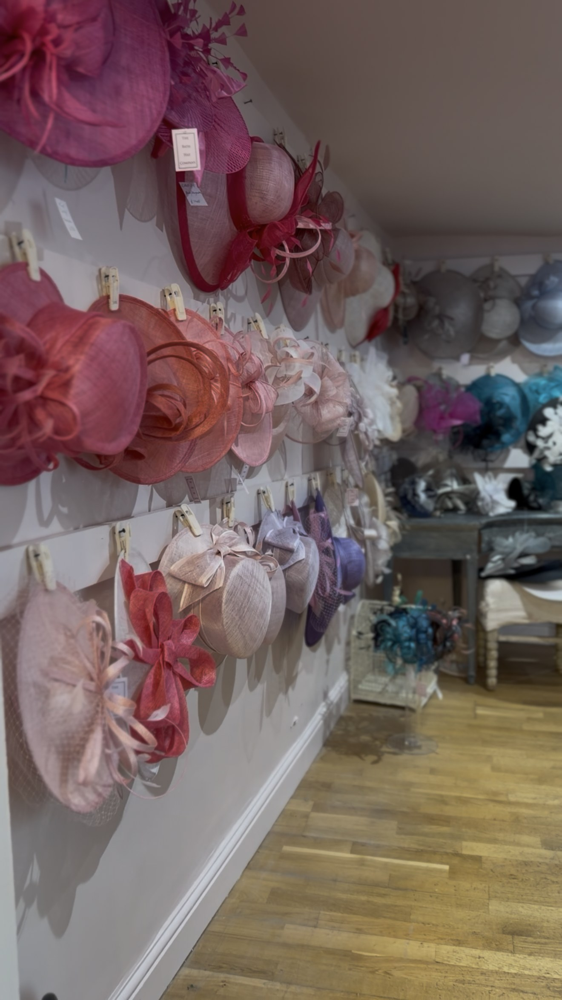
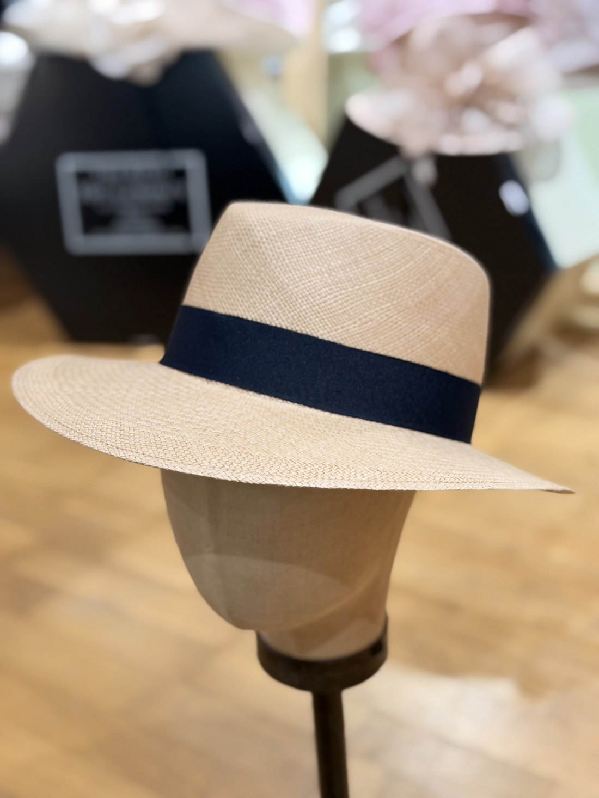
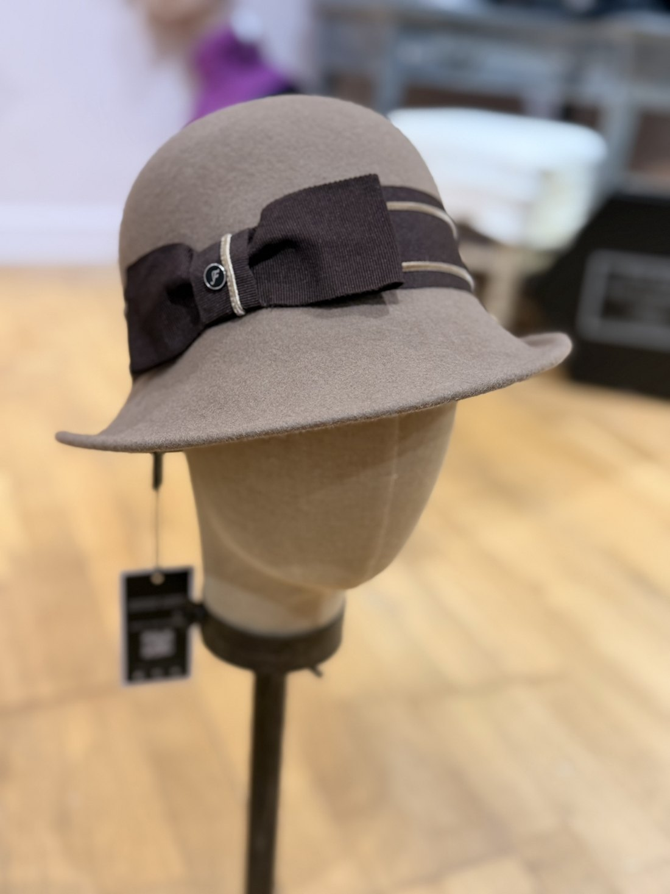
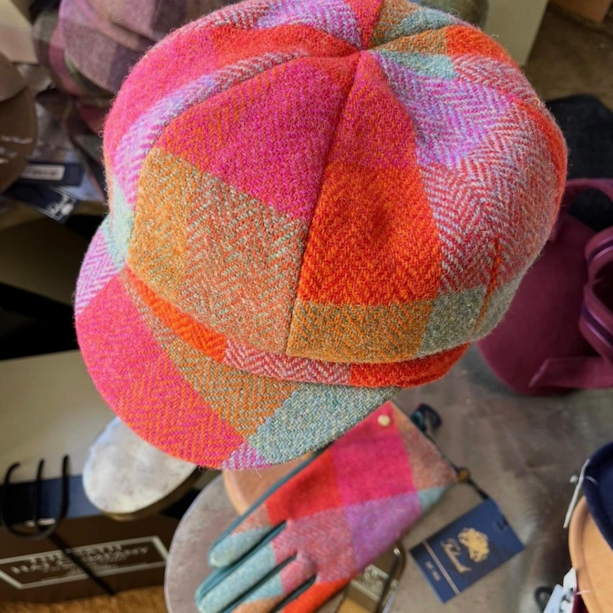
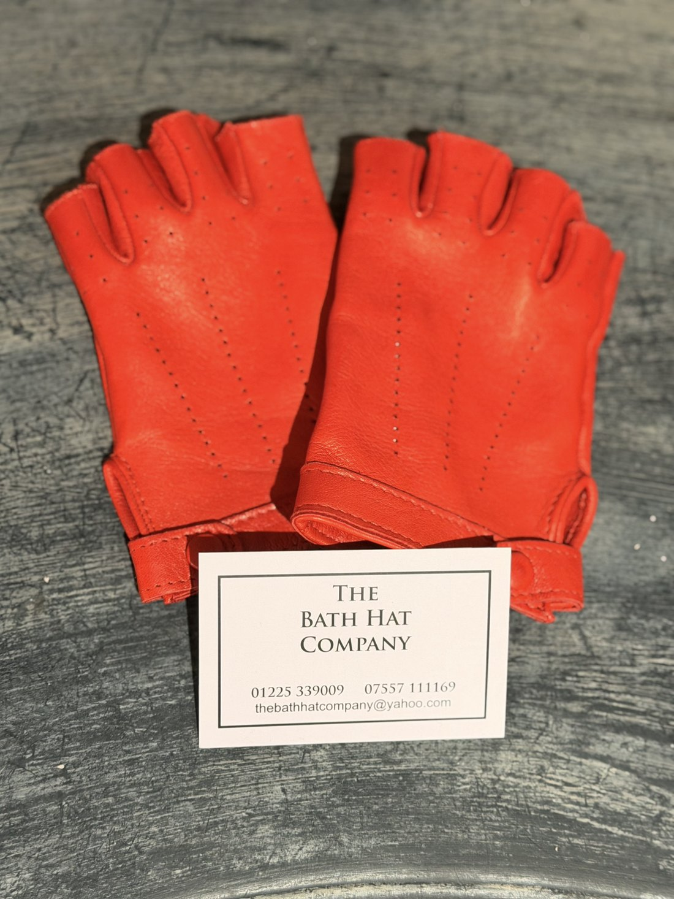
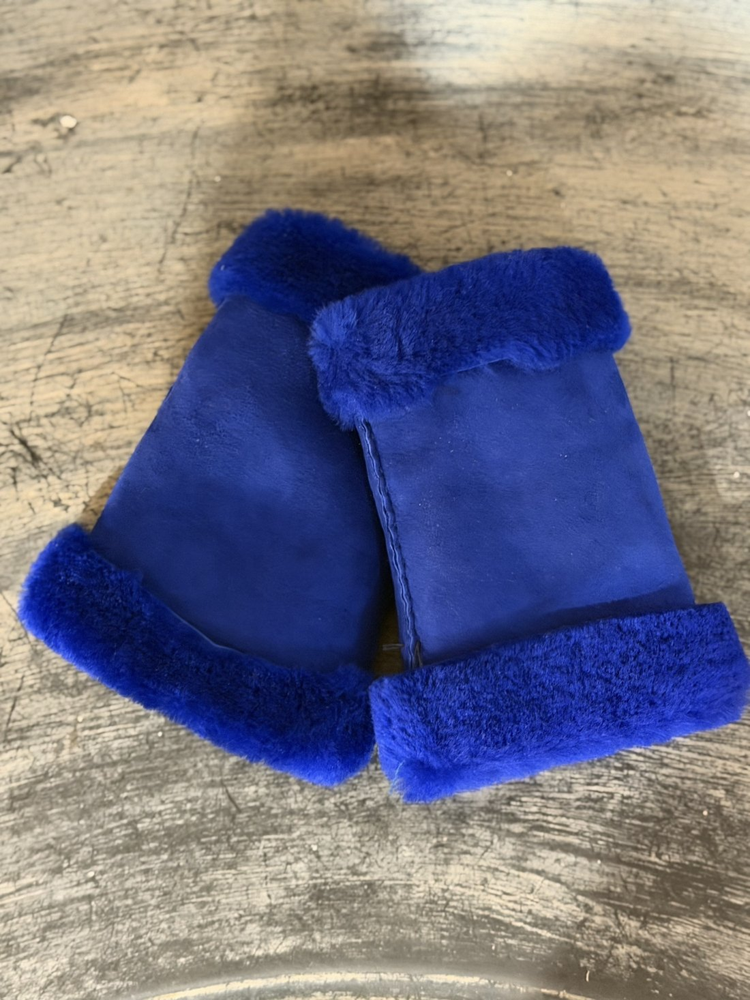
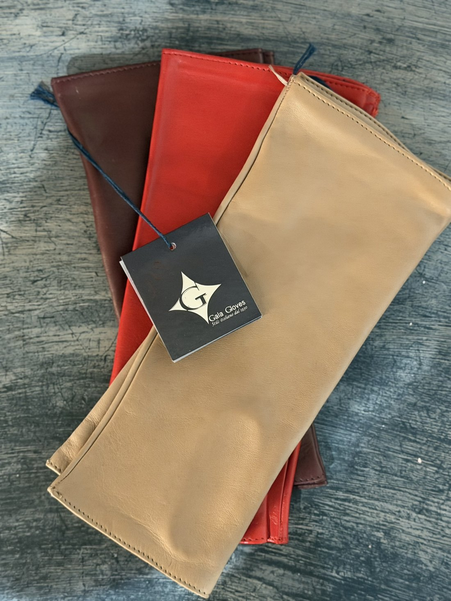

Occasions
Three decades of dressing heads for every event on Bath's social calendar — from the races to the aisle, and every day in between.
Occasion Hats
As a trusted provider of exceptional hats for the past three decades, we have amassed an extensive collection suitable for every occasion. Whether you need an elegant accessory for a formal affair, a fine straw for a sunny day out, or a show-stopping saucer for the races, we have you covered.
Our range spans classic sun hats and boaters to whimsical, one-of-a-kind creations — each hand-selected and finished in store.


Mother of the Bride
As the mother of the bride, your presence is as cherished as the day itself — and your hat is so much more than an accessory. It is a statement of grace, confidence and quiet, timeless sophistication.
We take the time to understand your outfit, your colours and your comfort, then help you find the piece that feels unmistakably you — from understated elegance to something wonderfully bold. Every hat is fitted personally, so it looks and feels perfect on the day.
Everyday
A beautiful hat isn't only for special occasions. Our everyday collection gathers soft berets, baker-boy caps, cosy winter styles and easy straws — characterful headwear for a morning on Pulteney Bridge or an evening among the Christmas lights at Bath Abbey.




Women who wear black lead colourful lives.
Michael Kors




Accessories
The details make the outfit. Alongside our hats we carry beautiful accessories — gloves, wraps and finishing touches to complete your look, whether you're dressing for the races, a wedding or a walk through the city.
Pop in and let us help you pull the whole ensemble together, one thoughtful piece at a time.
Frequently asked questions
Do I need an appointment to visit?
Not at all — we welcome walk-ins Monday to Saturday, 10:30am–3:30pm. For a special occasion or Mother of the Bride fitting, feel free to call ahead on 01225 339009 so we can set time aside just for you.
Do you have hats for both men and women?
Yes — our range spans occasion millinery, Mother of the Bride pieces, everyday styles and accessories for all.
Can I buy online or have a hat posted?
We're a proudly in-person boutique — every hat is fitted and finished with you in the room. Call us on 01225 339009 to check what's currently in stock before you visit.
Do you have hats for Royal Ascot or weddings?
Absolutely — race days and weddings are two of our specialities, including our statement MAEVE millinery collection. See our gallery for inspiration.